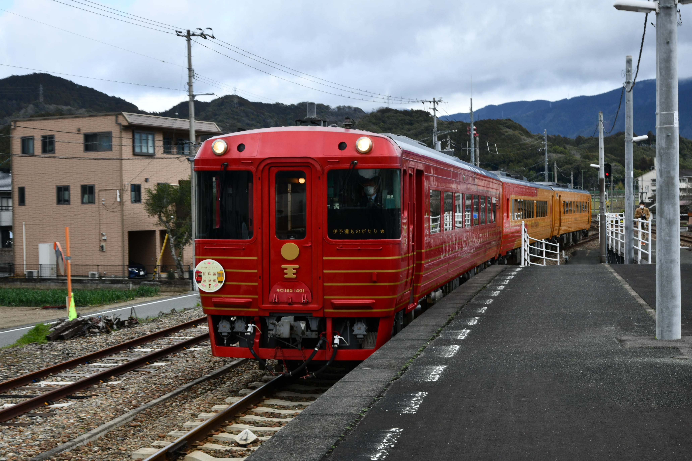

Phota album
8000系電車と8600系
高松駅で8000系のアンパンマン列車「いしづち号」、8600系が7番乗り場に停車していました。停車駅は高松・坂出・宇多津・丸亀・多度津・観音寺・川之江・伊予三島・新居浜・伊予西条・壬生川・今治・伊予北条・松山です。
8000系の特急列車です
愛媛県の松山駅の1番線に特急しおかぜ・いしづち号が停車してました。停車駅は松山・伊予北条・今治・壬生川・伊予西条・新居浜・伊予三島・川之江・観音寺・多度津・丸亀・宇多津※ここでしおかぜ号といしづち号を切り離す。しおかぜ号の停車駅は児島・岡山です。いしづち号は坂出・高松です。
321系の快速電車です
放出駅の１番線に到着した電車は学研都市線・東西線経由の快速塚口行です。停車駅は同志社前・京田辺・大住・松井山手・長尾・河内磐船・星田・四条畷・住道・放出・京橋・大阪城北詰・大阪天満宮・北新地・新福島・海老江・御幣島・加島・尼崎・塚口です。
281系の特急はるか号
特急はるか号は京都駅の６番線から発車します。停車駅は京都・高槻・新大阪・天王寺・和泉府中・日根野・関西空港です。
HOT7000系の特急スーパーはくと号
特急スーパーはくとの停車駅は、京都・新大阪・大阪・三ノ宮・明石・姫路・上郡・佐用・大原・智頭・群家・鳥取・倉吉です。

2700系がローレル賞を受賞
2020年のブルーリボン賞は西武鉄道001系、ローレル賞はJR四国の2700系です。過去では5000系マリンライナーは2004年ブルーリボン賞、キハ185系は1987年ローレル賞、2000系は1990年ローレル賞を受賞していました。画像はhttps://twitter.com/tatojrs12/status/1268886289388052481で載っていたものを使いました。

5000系と223系を連結する快速マリンライナー
5000系の2階建て車両は1階は指定席、2階はグリーン席、展望席はグリーン席です。223系は自由席です。停車駅は高松・坂出・児島・上の町・木見・植松・茶屋町・早島・妹尾・備中西市・大元・岡山です。
ことでんのマスコット
左からことみちゃん、ことのちゃん、ことちゃんです。ことちゃんとことみちゃんの娘がことのちゃん（中央）です。僕が好きなのはことのちゃんです。みなさんはどうでしょうか？
2000系の特急南風
2021年3月13日で特急しまんと3号、南風1号での2000系の運転が終了し、新しい2700系に引き継ぎました。特急南風の停車駅は、岡山・児島・宇多津・丸亀・多度津・善通寺・琴平・阿波池田・大歩危・大杉・土佐山田・後免・高知です。特急しまんとの停車駅は、高松・坂出・宇多津で特急南風号と連結して高知に向かいます。
2000系特急しまんと
特急しまんとは1日5往復のみ走っている特急列車です。この列車は高松と高知・中村・宿毛行の特急電車です。停車駅は高松・坂出・宇多津・丸亀・多度津・善通寺・琴平・阿波池田・大歩危・大杉・土佐山田・後免・高知・旭・朝倉・伊野・佐川・須崎・土佐久礼・窪川・土佐佐賀・土佐上川口・土佐入野・中村・平田・宿毛です。途中の窪川駅からＪＲ四国から土佐くろしお鉄道中村宿毛線に変わるので運転手と車掌が変わります。2000系の運転は2021年3月13日の特急しまんと3号で運転が終了し、新型車両2700系が継続運転します。2023年のダイヤ改正でしまんと8号が高知と高松に変更しましたが、2024年3月のダイヤ改正でしまんと8号は高知ではなく、宿毛発高松行きに復活！
特急うずしお号
うずしお号の停車駅は、一部の列車は岡山・児島・宇多津が通ります。すべての列車は、岡山・宇多津・高松・栗林・屋島・志度・オレンジタウン・讃岐津田・三本松・讃岐白鳥・引田・板野・池谷・勝瑞・徳島です。現在のうずしおの車両は、2600系、2700系、キハ185系が使用されています。N2000系は2020年7月18日にもって運行が終了しました。岡山発徳島行の特急うずしおは1日2往復のみの運行です。
キハ185系特急剣山
剣山の停車駅は、徳島・蔵本・石井・鴨島・阿波川島・阿波山川・穴吹・貞光・阿波加茂・阿波池田です。阿波池田で高知方面に乗り換えができます。
223系ワンマン電車
福知山駅からワンマン電車で篠山口行に乗車。停車駅は福知山・丹波竹田・市島・黒井・石生・柏原・谷川・下滝・丹波大山・篠山口です。ここから先は尼崎まで行っています。福知山線（JR宝塚線）は2005年に塚口～尼崎間で発生した列車脱線事故がありました。死者は運転手入れて107名、重軽傷者は562人でした。この列車は宝塚発快速東西線・学研都市線経由の同志社行きでした。この列車は途中の放出駅に停車します。

おおさか東線の車両は201系
おおさか東線の停車駅は久宝寺・新加美・衣摺加美北・JR長瀬・JR俊徳道・JR川内永和・高井田中央・放出・鴨野・JR野江・城北公園通・JR淡路・南吹田・新大阪です。新大阪ー放出間は2019年3月に開業しました。開業する前は放出ー久宝寺でした。今はここから奈良に行くことが可能になりました。
四国の観光列車
.jpg)
.jpg)
四国まんなか千年ものがたり
四国まんなか千年ものがたりは多度津と大歩危間を結ぶ観光列車である。車両は国鉄時代で使用されていたキハ185系を改造したものです。途中の秘境駅である坪尻駅に停車します。所要時間は2時間かけて運行します。多度津から大歩危へ向かうときの先頭車両は「そらの郷紀行」で、大歩危から多度津へ向かうときの先頭車両は「しあわせ郷紀行」です。それぞれ、停車駅は異なります。また、詳しい情報は写真をクリックすると表示できるようにしています。
四国の観光列車にはまだあります。2021年いっぱいで車両が引退するのが伊予灘ものがたりの車両（キロ47形）です。リニューアル車両は３両編成のキハ185系です。
伊予灘ものがたり
2022年春にリニューアルします。伊予灘ものがたりは松山と伊予大洲・八幡浜を結ぶ観光列車です。ぜひ四国の観光列車に乗ってみてください。3号は個室になっています。2024年3月1日、2日、3日に伊予大洲から宇和島、予土線の特別企画での運転がありました。定期的に運転してるのは、①大洲編は松山と伊予大洲を結ぶ②双海編は伊予大洲と松山を結ぶ③八幡浜編は松山と八幡浜を結ぶ④道後編は八幡浜と松山を結ぶ列車です。
志国土佐時代の夜明けものがたり
志国土佐時代の夜明けものがたりは高知と窪川を結ぶ観光列車です。期間中の4月から6月中は高知と奈半利を結びます。高知から窪川までを2時間半かけて運行します。途中の駅である安和駅で停車し、太平洋から近い駅なので、海と電車をバックとして写真を写すことができます。安和駅を下車できるのは「立志の抄」をお勧めします。開花の抄でも安和駅は運転停車はしますが、下車はできません。高知から窪川まで「立志の抄」、窪川から高知まで「開花の抄」です。それぞれおもてなししてくれる駅もあるので楽しむことができます。
観光列車であるアンパンマントロッコ号
このアンパンマントロッコ号は１号車はトロッコ車両と２号車の座席に座ることができます。運転区間は、高松⇔岡山、琴平⇔岡山です。高松⇔岡山の停車駅は高松・端岡・鴨川・坂出・児島・岡山です。琴平⇔岡山の停車駅は琴平・善通寺・多度津・丸亀・宇多津・児島・岡山です。乗車券のほかにグリーン車指定席券が必要です。必要な情報は画像をクリックするとサイトに行くのでそちらでお願いします。
寝台特急サンライズ瀬戸号
寝台特急サンライズ瀬戸号は高松と東京を結ぶ夜行寝台特急です。唯一残っている寝台列車です。上りの停車駅は高松・坂出・児島・岡山・姫路・三ノ宮・大阪・静岡・富士・沼津・熱海・横浜・東京です。途中の岡山で出雲市から来たサンライズ出雲号を連結して東京に向かいます。下りの停車駅は東京・横浜・熱海・沼津・富士・静岡・浜松・姫路・岡山・児島・坂出・高松・（多度津・善通寺・琴平）です。途中の岡山でサンライズ出雲号と切り離します。（）の中の駅は延長運転している日があります。3ページ目をご覧ください。
223系新快速
新快速は1970年から2020年で50周年になりました。新快速の特徴は特急列車並みのスピード（130km／h）で走行します。東は敦賀駅から、西は播州赤穂駅間で走行します。敦賀と播州赤穂までの時間は４時間6分で結びます。敦賀駅を17時49分発播州赤穂着21時55分です。この新快速は敦賀発北陸本線（米原）、琵琶湖線（京都）、京都線（大阪）・神戸線（姫路）・山陽本線（相生）・赤穂線の播州赤穂行です。新快速の停車駅は普通の快速よりも停車駅が少ないのが特徴です。現在は新快速には有料座席サービス（Aシート）があります。網干・姫路～野洲間の毎日上下４本運転しています。
特急しらさぎ号
特急しらさぎ号は名古屋と金沢駅を結ぶ特急列車です。停車駅は名古屋・尾張一宮・岐阜・大垣・米原・長浜・敦賀・武生・鯖江・福井・芦原温泉・加賀温泉・小松・金沢です。

323系の大阪環状線
大阪環状線の過去の車両は、103系・201系が最近引退した車両です。現在の大阪環状線は323系が主にです。大阪環状線は、大阪環状線だけではなく、大和路線（難波、奈良方面）、阪和線（和歌山）、関西空港線（関西空港）、JRゆめ咲線（USJ、桜島）が通っています。大阪環状線の停車駅は大阪・福島・野田・西九条・弁天町・大正・芦原橋・今宮・新今宮・天王寺・寺田町・桃谷・鶴橋・玉造・森ノ宮・大阪城公園・京橋・桜ノ宮・天満・大阪です。
北陸本線の普通電車
北陸本線の普通電車は521系が使用されています。停車駅は敦賀・南今庄・今庄・湯尾・南条・王子保・武生・鯖江・北鯖江・大土呂・越前花堂・福井・森田・春江・丸岡・芦原温泉・細呂木・牛ノ谷・大聖寺・加賀温泉・動橋・粟津・小松・明峰・能美根上・小舞子・美川・加賀笠間・松任・野々市・西金沢・金沢です。敦賀～福井、福井～金沢のように乗り換えます。各駅停車で３時間かかります。2024年3月16日のダイヤ改正で敦賀〜金沢間は新幹線が開業し在来線は廃止になります。
３６ぷらす３
世界で36番目に大きな島、九州全県を巡る「３６ぷらす３」は、５つのルートに九州を楽しむ３５のエピソードをぎゅーっと詰め込んでお客様をお迎えします。この列車では驚き・感動・幸せをお届けし、「お客様、地域の皆様、私たち」で一つになって「３６（サンキュー！）＝「感謝」の輪を広げていきます。ルートは、木曜日では博多から熊本、鹿児島中央を結びます。これは、鹿児島本線を通り、肥薩おれんじ鉄道を経由し鹿児島中央をいきます。九州新幹線が開業する前に特急つばめが博多から西鹿児島を結んでいたルートを通ります。金曜日では鹿児島中央から宮崎を結びます。これは途中の大隈大川原駅で停車します。新たに霧島神宮に停車します。土曜日では宮崎空港・宮崎から大分・別府を結びます。途中の駅で秘境駅である宗太郎駅、他には延岡、重岡に停車します。日曜日では大分・別府から博多を結びます。途中の駅では杵築、中津、門司港に停車します。門司港では1時間停車できるので門司港周辺が散策できると思います。月曜日では博多から佐世保の往復です。途中の駅では肥前浜駅で50分停車するのでおもてなしがあります。ぜひ、乗ってみてください。この車両は、787系です。編成はグリーン車と個室があり、食事込みにすることもできます。
現在、臨時列車を撮影したの作っていますので楽しみに待っていてください。